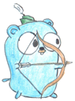
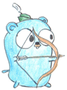

お使いのブラウザは音声読み上げに対応していません。 Firefox for Linux は発話モジュールをインストールしてください。例:
sudo apt install speech-dispatcher
sudo apt install festival speech-dispatcher-festival画像からことばを当てるクイズです。
180
/ 180 sec
ヒント (
6文字 ):
ゴファー


 


スコア
クリアしたのは・・・
0